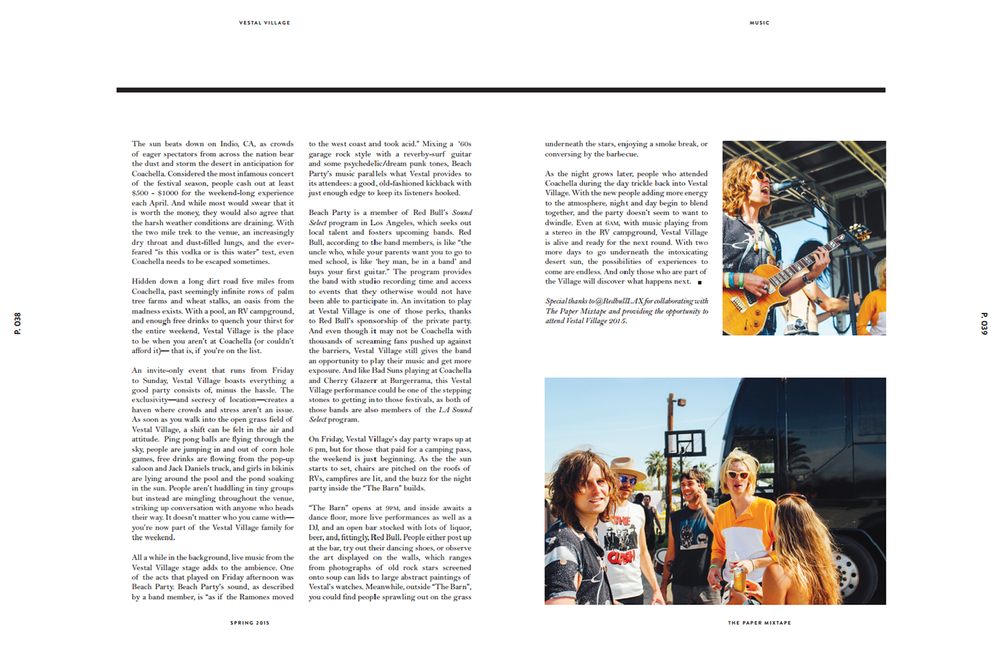
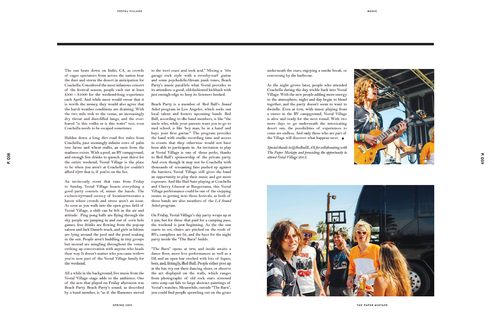

Daily Bruin
Movie Review: 'Hail Caesar!'
Eddie Mannix is a sinner—well, a relapsing smoker. Yes it’s toxic, but he can’t resist just one more drag of nicotine.
Who can blame him? He works in the fast-paced film industry of the 1950s, juggling the actors’ peculiarities and the backdoor politics to ensure the smooth-running of Capitol Pictures... Read More
Student Shares Passion for Geography Through Travel Photography
On a cold winter night in Fairbanks, Alaska, five UCLA students stood on top of a small hill, awaiting a glimpse of the Northern Lights. Freezing and convinced the lights would not make appearance that night, the students were ready to continue on with their trip when a strong wave came through and lit up the sky.
When capturing the fluoresce on camera, the group added their own light to the night sky: the glowing letters “UCLA.”... Read More
Book Review: '10,000 Steps a Day in L.A.'
Walking in Los Angeles seems to be a lost art.
Angelenos and tourists that have flocked to the City of Angels in the past years have traded in their legs for gasoline-guzzling cars that sit on the streets in bumper-to-bumper traffic for several hours each day... Read More
Screenwriting Lecturer Retires, Reflects on Teaching Experience
When senior lecturer Hal Ackerman was first asked to teach at UCLA, he was terrified. He said he had no confidence that he could offer students any advice that merited real value.
Now, 30 years later, Ackerman sits in his office where movie posters cover the walls. On these posters are personal insignias from the screenwriters, all of whom are Ackerman’s former students... Read More
‘An Evening of Devised Work’ Transforms Individuals Into Two Ensembles
The apocalypse looms in North Campus as a comet hurls towards Macgowan Hall. At night, a young girl’s imagination transforms the hall into a fantasy world.
These two universes are the settings for “Paper Cranes” and “Inconclusion,” the fictional plays that graduate acting, directing and playwright students have created and immersed themselves in for several months. This weekend, audiences will become part of these alternative realities at “An Evening of Devised Work,” the second annual showcase, which consists of these two plays...Read More
http://dailybruin.com/author/kelsey-stern/
 
